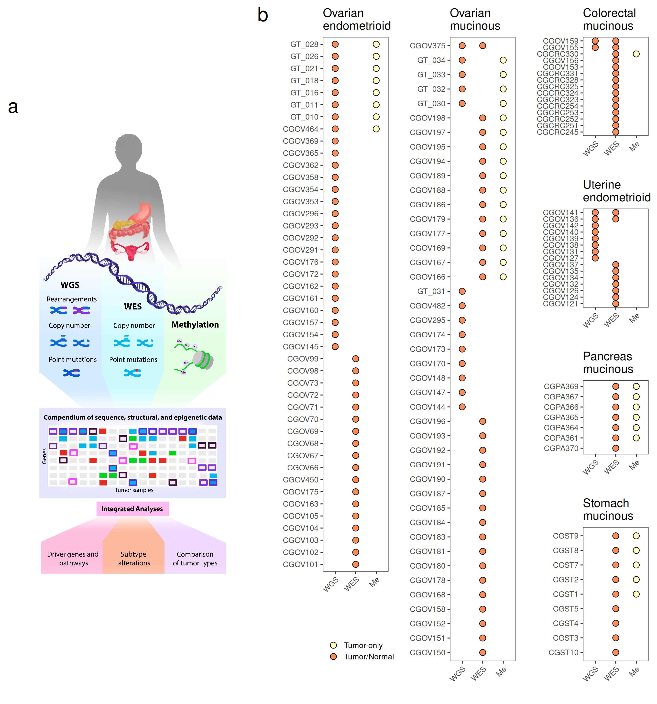

Last updated: 2026-08-31
Checks: 6 1
Knit directory: repo/analysis/
This reproducible R Markdown analysis was created with workflowr (version 1.7.2). The Checks tab describes the reproducibility checks that were applied when the results were created. The Past versions tab lists the development history.
Great! Since the R Markdown file has been committed to the Git repository, you know the exact version of the code that produced these results.
Great job! The global environment was empty. Objects defined in the global environment can affect the analysis in your R Markdown file in unknown ways. For reproduciblity it’s best to always run the code in an empty environment.
The command set.seed(12345) was run prior to running the
code in the R Markdown file. Setting a seed ensures that any results
that rely on randomness, e.g. subsampling or permutations, are
reproducible.
Nice! There were no cached chunks for this analysis, so you can be confident that you successfully produced the results during this run.
Great job! Using relative paths to the files within your workflowr project makes it easier to run your code on other machines.
Great! You are using Git for version control. Tracking code development and connecting the code version to the results is critical for reproducibility.
The results in this page were generated with repository version 9e09a1a. See the Past versions tab to see a history of the changes made to the R Markdown and HTML files.
Note that you need to be careful to ensure that all relevant files for
the analysis have been committed to Git prior to generating the results
(you can use wflow_publish or
wflow_git_commit). workflowr only checks the R Markdown
file, but you know if there are other scripts or data files that it
depends on. Below is the status of the Git repository when the results
were generated:
Ignored files:
Ignored: .Rhistory
Ignored: .claude/
Ignored: .uvr/
Ignored: .vscode/
Ignored: REPRODUCIBILITY_PLAN.html
Ignored: Rplots.pdf
Ignored: _targets/
Ignored: bam_clean/
Ignored: baseline_review/
Ignored: cards/dashboard.html
Ignored: code/archive/
Ignored: data/crosswalk_private.csv
Ignored: data/ega_file_listing.csv
Ignored: extdata/bVals.rds
Ignored: extdata/bVals081820.rds
Ignored: extdata/mutation_reports/
Ignored: hallberg2025.base/
Ignored: hallberg2025.meth.data/data-raw/.Rhistory
Ignored: hallberg2025.meth.data/data-raw/_targets/
Ignored: hallberg2025.meth.data/data-raw/_targets_change002_delta/
Ignored: hallberg2025.meth.data/data-raw/beta_concordance_batch1.png
Ignored: hallberg2025.meth.data/data-raw/logs/
Ignored: hallberg2025.meth.data/data-raw/slurm-34256940.out
Ignored: hallberg2025.meth.data/data-raw/slurm-34683691.out
Ignored: hallberg2025.seq.data/data-raw/.Renviron
Ignored: hallberg2025.seq.data/data-raw/Rplots.pdf
Ignored: hallberg2025.seq.data/data-raw/facets_metrics/
Ignored: hallberg2025.seq.data/data-raw/facets_metrics_wes/
Ignored: hallberg2025.seq.data/data-raw/logs/
Ignored: hallberg2025.seq.data/data-raw/reproduction_output/
Ignored: hallberg2025.seq.data/data-raw/slurm-34294594.out
Ignored: hallberg2025.seq.data/data-raw/slurm-34352530.out
Ignored: hallberg2025.seq.data/data-raw/slurm-34491256.out
Ignored: hallberg2025.seq.data/data-raw/slurm-34523320.out
Ignored: hallberg2025.seq.data/data-raw/slurm-34537166.out
Ignored: hallberg2025.seq.data/data-raw/slurm-w2-verify-34363920.out
Ignored: hallberg2025.seq.data/data-raw/slurm-w3-verify-34368104.out
Ignored: hallberg2025.seq.data/data-raw/slurm-w3-verify-34408517.out
Ignored: hallberg2025.seq.data/data-raw/snp_matrix/
Ignored: hallberg2025.seq.data/data-raw/snp_matrix_wes/
Ignored: hallberg2025.seq.data/data-raw/tools/snplocschr1
Ignored: hallberg2025.seq.data/data-raw/tools/snplocschr10
Ignored: hallberg2025.seq.data/data-raw/tools/snplocschr11
Ignored: hallberg2025.seq.data/data-raw/tools/snplocschr12
Ignored: hallberg2025.seq.data/data-raw/tools/snplocschr13
Ignored: hallberg2025.seq.data/data-raw/tools/snplocschr14
Ignored: hallberg2025.seq.data/data-raw/tools/snplocschr15
Ignored: hallberg2025.seq.data/data-raw/tools/snplocschr16
Ignored: hallberg2025.seq.data/data-raw/tools/snplocschr17
Ignored: hallberg2025.seq.data/data-raw/tools/snplocschr18
Ignored: hallberg2025.seq.data/data-raw/tools/snplocschr19
Ignored: hallberg2025.seq.data/data-raw/tools/snplocschr2
Ignored: hallberg2025.seq.data/data-raw/tools/snplocschr20
Ignored: hallberg2025.seq.data/data-raw/tools/snplocschr21
Ignored: hallberg2025.seq.data/data-raw/tools/snplocschr22
Ignored: hallberg2025.seq.data/data-raw/tools/snplocschr3
Ignored: hallberg2025.seq.data/data-raw/tools/snplocschr4
Ignored: hallberg2025.seq.data/data-raw/tools/snplocschr5
Ignored: hallberg2025.seq.data/data-raw/tools/snplocschr6
Ignored: hallberg2025.seq.data/data-raw/tools/snplocschr7
Ignored: hallberg2025.seq.data/data-raw/tools/snplocschr8
Ignored: hallberg2025.seq.data/data-raw/tools/snplocschr9
Ignored: hallberg2025.seq.data/data-raw/tools/snplocschrX
Ignored: hallberg2025.seq.data/data-raw/tools/snplocschrY
Ignored: hallberg2025.seq.data/data-raw/tools/zenodo-deposit-draft/
Ignored: hallberg2025.seq.data/data-raw/trellis_output/
Ignored: hallberg2025.seq.data/tests/testthat/_snaps/
Ignored: hallberg2025/
Ignored: inst/
Ignored: logs/
Ignored: manuscript/audit/
Ignored: manuscript/composite-1.eps
Ignored: manuscript/data_quality.html
Ignored: manuscript/hallberg2025.aux
Ignored: manuscript/hallberg2025.bbl
Ignored: manuscript/hallberg2025.blg
Ignored: manuscript/hallberg2025.log
Ignored: manuscript/supplemental.aux
Ignored: manuscript/supplemental.log
Ignored: manuscript/supplemental.pdf
Ignored: manuscript/testing/
Ignored: manuscript/~/
Ignored: output/01-coverage_stats.rmd/
Ignored: output/02-mutations.rmd/
Ignored: output/03-mutations.rmd/
Ignored: output/04-mutations.rmd/
Ignored: output/05-data_integration.rmd/
Ignored: output/07-figure5.rmd/stats.rds
Ignored: output/08-figure5.rmd/
Ignored: output/ext-figure9.Rmd/
Ignored: output/ext-figures/ext-figure9.Rmd/proportion_methylated.rds
Ignored: output/ext-figures/ext-figure9.Rmd/wilcox_stats.csv
Ignored: output/ext-figures/mutation_prevalence.rmd/
Ignored: output/facets-trellis/
Ignored: output/facets/
Ignored: output/figure6_jhu-heatmap.Rmd/
Ignored: output/figure6_tcga-heatmap.Rmd/
Ignored: output/gene_pathway.rmd/
Ignored: output/methylation.Rmd/
Ignored: output/mutations.html
Ignored: output/mutations.rds
Ignored: output/pcs.Rmd/
Ignored: output/pgdx_reports.rmd/
Ignored: output/read_length.rmd/
Ignored: output/temp.tar.gz
Ignored: output/temp/
Ignored: public/
Untracked files:
Untracked: manuscript/submitted/
Note that any generated files, e.g. HTML, png, CSS, etc., are not included in this status report because it is ok for generated content to have uncommitted changes.
These are the previous versions of the repository in which changes were
made to the R Markdown (analysis/figure1.Rmd) and HTML
(docs/figure1.html) files. If you’ve configured a remote
Git repository (see ?wflow_git_remote), click on the
hyperlinks in the table below to view the files as they were in that
past version.
| File | Version | Author | Date | Message |
|---|---|---|---|---|
| Rmd | 046240e | rscharpf | 2026-08-03 | MAN-05: repoint _targets.R and analysis/manuscript Rmds at renamed packages |
| html | 21ba89c | rscharpf | 2026-07-31 | GIT-03: untrack reproducible docs/ and output/ generated artifacts |
| html | 0bc1639 | rscharpf | 2026-07-01 | Update docs, OvarianSubtypeExperimentData accessors, and artifact baseline (prettyNum formatting fix for table_S6/S8) |
| Rmd | a53b26f | rscharpf | 2026-07-01 | Fix figure1.Rmd: conditional magick; platforms panel renders without ImageMagick for CI |
| html | 0476813 | rscharpf | 2026-06-30 | Rebuild manuscript PDF and analysis HTMLs with corrected mutation spectra |
| Rmd | e4c8f1c | rscharpf | 2026-06-29 | Add Fig1.pdf schematic; fix table_s2.Rmd to use coverage_stats.rds |
| html | e4c8f1c | rscharpf | 2026-06-29 | Add Fig1.pdf schematic; fix table_s2.Rmd to use coverage_stats.rds |
| Rmd | eb5d53d | rscharpf | 2026-06-24 | Replace gridExtra with patchwork in figure1.Rmd; rebuild derived HTML |
| html | eb5d53d | rscharpf | 2026-06-24 | Replace gridExtra with patchwork in figure1.Rmd; rebuild derived HTML |
| Rmd | a60c552 | rscharpf | 2026-06-23 | Strip private identifiers from published data objects; update analysis Rmds |
| Rmd | 4d4dec1 | rscharpf | 2025-06-18 | Update workflow figures |
| html | 4d4dec1 | rscharpf | 2025-06-18 | Update workflow figures |
| Rmd | 68f0201 | rscharpf | 2025-06-17 | All figure filepaths in manuscript folder |
| html | 68f0201 | rscharpf | 2025-06-17 | All figure filepaths in manuscript folder |
| html | f28db88 | rscharpf | 2025-06-03 | Update figures |
| Rmd | 4cac7a7 | rscharpf | 2025-04-02 | Capitalize Rmd extension |
| html | e3462b8 | Alice Eastman | 2025-03-06 | figure legend changes |
| html | 9e5779b | rscharpf | 2025-01-14 | Rebuilt all workflowr figures |
| html | 05caea1 | rscharpf | 2024-08-30 | Update html and figures |
| html | fea052d | rscharpf | 2024-08-18 | Updates for latest ovarian.subtypes R package |
| html | 4a850fc | Shashikant Koul | 2024-07-17 | Rebuild and publish |
| html | 79ddb57 | Shashikant Koul | 2024-07-02 | Rebuild docs |
| html | 423c880 | rscharpf | 2024-05-26 | Update COI and add renv info |
| html | 825bdcc | rscharpf | 2024-05-26 | Update workflowr analyses |
| html | f608e05 | rscharpf | 2024-04-09 | Build site. |
| html | b62fc6d | rscharpf | 2024-04-07 | Updated figures with latest integrated data |
| html | cbfed56 | rscharpf | 2024-03-05 | Build site. |
| html | 7cc323d | rscharpf | 2024-01-05 | Build site. |
| html | bf38e1d | rscharpf | 2024-01-02 | Update html docs and figure pdfs |
| html | 92cfff3 | rscharpf | 2023-12-30 | Build site. |
| html | 17b74b3 | rscharpf | 2023-12-22 | update rmds |
| html | 32aba0c | rscharpf | 2023-12-18 | html file updates |
| html | fd5cd41 | rscharpf | 2023-11-26 | updates |
| html | 63d8cf9 | rscharpf | 2023-11-26 | Add ovarian.subtypes package. Update analysis rmarkdowns |
| html | 21342b2 | rscharpf | 2023-11-24 | Update tables S0, S1 and Fig1 |
| html | 5b68d12 | rscharpf | 2023-11-24 | Updated outputs from figure 1 and table s0 |
| html | 435f00f | rscharpf | 2023-11-23 | Revised manifest with genotype ids for grouping tumor/normal pairs |
| html | e7cc333 | rscharpf | 2023-09-17 | Update figures. Decided not to include surv. in Fig 1 |
| html | 8cc8e40 | rscharpf | 2023-09-13 | Added survival data to figure 1 |
| html | d4910df | rscharpf | 2023-09-05 | update html for figure 1 |
library(tidyverse)
library(grid)
library(here)
library(patchwork)
library(hallberg2025.base)
library(magrittr)
library(RColorBrewer)
knitr::opts_chunk$set(echo = TRUE)
# magick requires the system ImageMagick dylib; check availability before use
has_magick <- requireNamespace("magick", quietly = TRUE) &&
tryCatch({ magick::magick_config(); TRUE }, error = function(e) FALSE)panel.lt <- magick::image_read_pdf(here("extdata", "Fig1.pdf"))
tmp <- magick::image_ggplot(panel.lt)data(manifest, package="hallberg2025.base")
data(methylation, package="hallberg2025.base")tumor_only_me <- subset(methylation, tumor.normal == "tumor")
platforms <- bind_rows(manifest, tumor_only_me)
## y-axis: platform
## symbol: triangle=tumor-only
## circle=tumor and normal
## x-axis: subject_id
## facets: tumor type
unique2 <- function(x) unique(x[!is.na(x)])
platforms2 <- platforms %>%
filter(!(is.na(tumor_type) & tumor.normal=="tumor")) %>%
mutate(platform=Hmisc::capitalize(platform)) %>%
select(subject_id, platform, lab_id, subject_id2, tumor.normal, tumor_type) %>%
group_by(subject_id, platform) %>%
summarize(tumor=paste(unique2(tumor_type), collapse=","),
tumor.normal=paste(sort(unique(tumor.normal)), collapse=","),
.groups="drop") %>%
mutate(matched=case_when(tumor.normal=="normal,tumor"~"Tumor/Normal",
tumor.normal=="tumor"~"Tumor-only",
tumor.normal=="normal"~"Normal-only"),
tumor=case_when(tumor=="colorectal"~"Colorectal mucinous",
tumor=="pancreas"~"Pancreas mucinous",
tumor=="stomach"~"Stomach mucinous",
TRUE~tumor),
tumor=Hmisc::capitalize(tumor)) %>%
mutate(tumor=factor(tumor, c("Ovarian endometrioid",
"Uterine endometrioid",
"Colorectal mucinous",
"Stomach mucinous",
"Ovarian mucinous",
"Pancreas mucinous"))) %>%
group_by(tumor) %>%
nest()
colors <- brewer.pal(n=3, "RdYlBu")
names(colors) <- c("Tumor/Normal",
"Tumor-only",
"Normal-only")
platforms3 <- platforms2 %>%
mutate(tumor=str_wrap(tumor, 12))
ggplatform <- hallberg2025.base::fig1_ggplatform
result.list <- seq_along(platforms3$data) %>%
map2(platforms3$data, ggplatform,
colors=colors,
cancer=platforms3$tumor)
## A ggplot for each of the six tumor types
figures2 <- map(result.list, 1)
leg <- result.list[[4]][[2]]
figures2[[7]] <- nullGrob()
figures2[[8]] <- leg
##
## Make a grid with 8 numbers such that we can make a composite figure where
## each tumor type gets a space proportional to the number of samples in that tumor
##
mat <- cbind(c(rep(2, 64),
rep(7, 1),
rep(8, 7)),
rep(4, 72),
c(rep(1, 20),
rep(7, 0),
rep(3, 20),
rep(7, 0),
rep(5, 15),
rep(7, 0),
rep(6, 17),
rep(7, 0)))Number of WES samples with tumor/normal pairs:
facet.samples <- platforms3$data %>%
map_dfr(function(x){
xx <- filter(x, platform == "WES",
tumor.normal=="normal,tumor")
xx
})design <- c(
area(1, 1, 64, 1), # Uterine endometrioid
area(65, 1, 65, 1), # spacer
area(66, 1, 72, 1), # legend
area(1, 2, 72, 2), # Stomach mucinous
area(1, 3, 20, 3), # Ovarian endometrioid
area(21, 3, 40, 3), # Colorectal mucinous
area(41, 3, 55, 3), # Ovarian mucinous
area(56, 3, 72, 3) # Pancreas mucinous
)
panel.rt <- wrap_plots(
figures2[[2]], plot_spacer(), wrap_elements(leg),
figures2[[4]],
figures2[[1]], figures2[[3]], figures2[[5]], figures2[[6]],
design = design,
widths = c(1, 1, 1)
)# Rendered when magick/ImageMagick is unavailable (e.g. CI): platforms panel only
panel.rt
grid.text("b", unit(0.01, "npc"), unit(0.98, "npc"), gp=gpar(cex=2.5))# Rendered when magick is available: full composite with pre-built Fig1.pdf panel
cowplot::plot_grid(tmp, panel.rt, rel_widths = c(4, 6), nrow = 1)
grid.text("a", unit(0.02, "npc"), unit(0.85, "npc"), gp=gpar(cex=2.5))
grid.text("b", unit(0.4, "npc"), unit(0.98, "npc"), gp=gpar(cex=2.5))